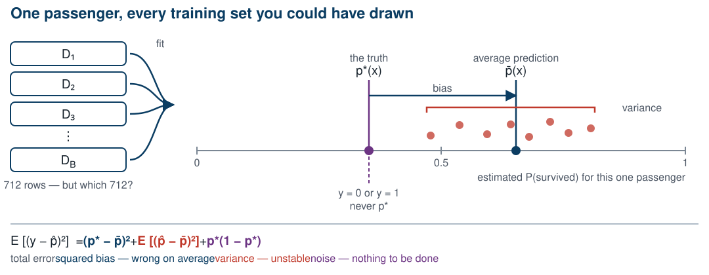
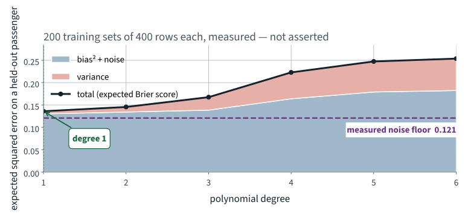
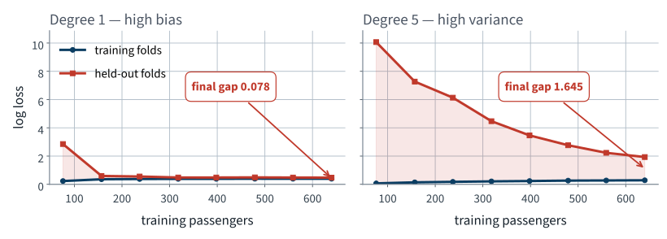
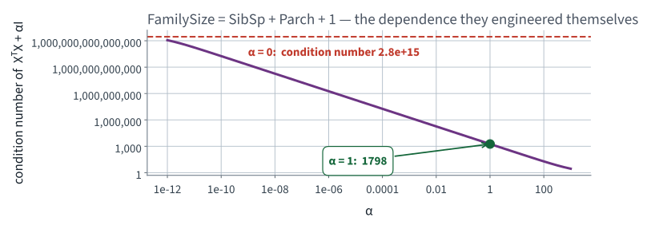
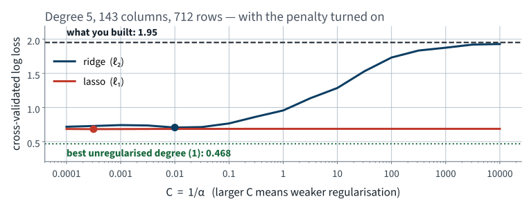
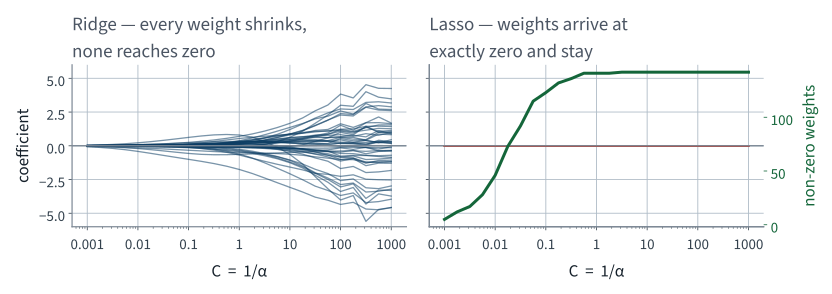

Why more capacity stops helping, and what to do about it
Lecture 5 Géron Ch. 4
One identity, three terms, and the one line that repairs an ill-posed fit
Applications of Machine Learning
BSc Mathematics of Artificial Intelligence · Third year
Worked example: the Titanic passenger manifest
Lecture 4 derived gradient descent — the gradient, the update, the bound $\eta < 2/\lambda_{\max}$, scaling through the condition number, the one-row unbiased gradient — and used it to fit a logistic regression to 712 Titanic passengers: log-odds, a log loss that is a proper scoring rule, a rank-deficient design repaired, calibration, softmax. Then it added polynomial capacity and recorded both curves:
| Degree | Columns | Training log loss | Held-out log loss |
|---|---|---|---|
| 1 | 22 | 0.395 | 0.468 |
| 2 | 32 | 0.381 | 0.471 |
| 3 | 52 | 0.355 | 0.539 |
| 5 | 143 | 0.286 | 1.952 |
One curve falls forever; the other turns and climbs. Two questions it cannot answer: where does the gap between them come from, and how far down could 0.468 ever go, against an anchor of 0.666? They have opposite repairs.
Measured on one run of this lecture’s notebook; hardware, library versions and random seeds can make a re-run differ slightly.
examinable The decomposition and what each expectation is over; reading a diagnosis off a pair of curves; ridge and lasso and what each does to the coefficients. not examinable Solver names, wall-clock timings, and the Titanic feature engineering.
Not the passenger. Fix one passenger $x$ and ask about them repeatedly.
Every expectation in this derivation is over those two sources and nothing else. The model is deterministic given $D$.
Expected squared error at one passenger
| Symbol | Meaning | Observed? |
|---|---|---|
| $\hat{p}_D(x)$ | what your model predicts, having seen $D$ | yes |
| $\bar{p}(x) = \mathbb{E}_D[\hat{p}_D(x)]$ | the average prediction over all training sets you could have drawn | no — estimated |
| $p^{*}(x)$ | the true probability that this passenger survives | never |
Averaged over passengers this is the Brier score the previous lecture already reported. We decompose it at a single $x$ and then average — nothing is lost by doing it one passenger at a time.
| Term | Means | Cured by |
|---|---|---|
| squared bias | wrong on average — the model family cannot reach the truth | more capacity |
| variance | unstable — a different sample gives a different answer | less capacity, or more data |
| noise | the label is not a function of the recorded columns | nothing |
How it arises: inside the square, add and subtract $\bar{p}$ and average over $D$; then add and subtract $p^{*}$ and average over $y$. Both cross terms vanish, because $\bar{p} = \mathbb{E}_D[\hat{p}_D]$ and $p^{*} = \mathbb{E}_y[y]$; the last term is $\operatorname{Var}(y)$ for a Bernoulli label.
The first two repairs point in opposite directions. That is the whole difficulty, and it is why it is called a trade-off.
Animation
Bias is the distance from the centre of the spread to the truth. Variance is the width of the spread. Neither is visible from one training set.
The identity is exact for squared error. Our headline metric is log loss, and log loss does not split into three additive terms like this.
Saying “bias–variance” about a log loss curve is common and slightly wrong. Doing it knowingly, and saying which metric you decomposed, is the difference.
| The result | What it lets you do |
|---|---|
| Three additive terms | ask which one is large before choosing a repair |
| Variance does not mention $p^{*}$ | estimate it without knowing the truth — refit and look at the spread |
| Noise depends only on $x$ | measure a floor that no model of these columns can beat |
| The gap between two curves | read a diagnosis off a plot in ten seconds |
The rest of this lecture is that table, executed: measure all three terms on the pipeline of the previous lecture, then repair the one that turned out to be large.
$p^{*}$ is never observed — but where several passengers share exactly the same recorded values, every model of those columns must give them the same number. Whatever their outcomes do inside that cell is a floor.
keys = ["Sex", "Pclass", "AgeBand", "FamBand", "Embarked"]
cells = full.groupby(keys, observed=True)["Survived"].agg(["sum", "count"])
# k(m-k)/(m(m-1)) is the unbiased estimator of p(1-p) from m Bernoulli draws
multi = cells[cells["count"] >= 2]
var = multi["sum"] * (multi["count"] - multi["sum"]) / (
multi["count"] * (multi["count"] - 1))
noise = (var * multi["count"]).sum() / multi["count"].sum()
133 distinct cells; 102 of them hold at least two passengers, covering 858 people.
Measured on one run of this lecture’s notebook; hardware, library versions and random seeds can make a re-run differ slightly.
0.121
Brier score. Measured, not assumed.
56 of the 102 shared cells are mixed — 657 passengers sit in a cell where the outcome went both ways. That is 74% of everyone on board, living inside a cell whose answer cannot be certain.
It is an under-estimate of the true noise: two passengers in the same cell may still differ in ways the manifest never recorded. The real floor is at least this high.
Measured on one run of this lecture’s notebook; hardware, library versions and random seeds can make a re-run differ slightly.

200 training sets of 400 rows drawn from the 712, each scored on the same 179 held-out passengers. From degree 1 to 6 the variance is multiplied by twelve; everything else is nearly flat.
Measured on one run of this lecture’s notebook; hardware, library versions and random seeds can make a re-run differ slightly.
These are the only two shapes, and telling them apart takes ten seconds once you know what you are looking at.
Animation
A learning curve: the $x$-axis is training rows. Left: the curves have met. Right: they have not, and the gap is still falling — the model is starved of rows, not of capacity.
| Curve | $x$-axis | Answers |
|---|---|---|
| Learning curve | training-set size | would more rows help? |
| Validation curve | one hyperparameter | which setting is right, and is the optimum interior? |
from sklearn.model_selection import validation_curve
train, valid = validation_curve(
pipeline(degree=5), X_train, y_train, cv=cv,
param_name="clf__C", param_range=np.logspace(-4, 4, 17),
scoring="neg_log_loss")
Read the ends of a validation curve first. A minimum sitting on the edge of the range means the range was too narrow and the answer you read off it is an artefact of where you stopped looking.
1.952
Degree 5 is almost three times worse than saying nothing at all.
Not worse than the best model. Worse than the anchor of 0.666 — worse than a model that has learned only how many people died.
| Degree 1 | Degree 5 | |
|---|---|---|
| Columns | 22 | 143 |
| Training rows | 712 | 712 |
| Rows per weight | 32 | 5 |
| Variance term, Brier | 0.006 | 0.068 |
Five rows per weight. Move one passenger between folds and the fitted surface moves with them.
This is the diagnosis the derivation was built to deliver, and it is not yet the whole story. Two more faults are underneath it.
Measured on one run of this lecture’s notebook; hardware, library versions and random seeds can make a re-run differ slightly.
Suppose that in the expanded feature space some $\boldsymbol\theta$ separates the classes perfectly. Then
so the training log loss falls monotonically towards zero as $\lVert\boldsymbol\theta\rVert \to \infty$. The infimum is never attained.
| Degree | 1 | 2 | 3 | 4 | 5 | 6 |
|---|---|---|---|---|---|---|
| Converged | yes | yes | yes | no | no | no |
| Largest $|\theta_j|$ | 4.87 | 5.65 | 6.51 | 19.51 | 8.20 | 4.27 |
Measured on one run of this lecture’s notebook; hardware, library versions and random seeds can make a re-run differ slightly.
Recall from the previous lecture that
FamilySize = SibSp + Parch + 1 exactly, on every row. Standardise
the five numeric columns, form
$\mathbf{X}^{\intercal}\mathbf{X}$, and look at its spectrum:
>>> np.linalg.eigvalsh(Z.T @ Z)
array([5.59e-13, 4.29e+02, 5.43e+02, 7.90e+02, 1.80e+03])
The smallest eigenvalue is zero to the precision the arithmetic allows. Four columns of information in five columns of data.
Condition number about $2.82\times10^{15}$. A double carries about $10^{16}$ of relative precision, so roughly one significant digit survives the solve.
Measured on one run of this lecture’s notebook; hardware, library versions and random seeds can make a re-run differ slightly.
If $\mathbf{X}^{\intercal}\mathbf{X}\,\mathbf{v} = \lambda\mathbf{v}$, then
The bound on the right does not mention $\lambda_{\min}$ at all. Whatever the data do — exact collinearity included — the conditioning is controlled by a number you choose.
At $\alpha = 1$ the condition number of our singular matrix falls from $2.82\times10^{15}$ to 1798.
And $\kappa$ is what set the step count for gradient descent in the previous lecture. The penalty is not only a statistical device; it is what makes the optimisation tractable.
Measured on one run of this lecture’s notebook; hardware, library versions and random seeds can make a re-run differ slightly.

A straight line of slope $-1$ over twelve decades: in this regime the condition number is simply $\lambda_{\max}/\alpha$. The dependence in the data is not repaired — it is dominated.
Stop asking for the best fit. Ask for the best fit among small models.
$\Omega$ penalises the size of the weights; $\alpha$ says how much you care. Setting $\alpha = 0$ recovers exactly the previous lecture.
Constraining the model is one of the two cures for variance, and the only one available when the dataset is fixed at 891 rows.
Also called Tikhonov regularisation; the book gives both names.
Least Absolute Shrinkage and Selection Operator. The word selection is the point: lasso drives weights to exactly zero, so it performs feature selection as a side effect of fitting.
Ridge shrinks everything and eliminates nothing.
Look at the gradient of the penalty near $\theta_j = 0$.
Ridge
The push towards zero fades as you approach zero. You arrive only in the limit.
Lasso
The push keeps its size right up to zero. If the data pulls with less than $\alpha$, the weight reaches zero and stops.
At $\theta_j = 0$ the absolute value is not differentiable; the subgradient is the whole interval $[-1, 1]$, and any data pull inside that interval is held at exactly zero.
Animation
Both curves are far below the dashed line. Neither of them reaches the dotted one.
| Model | Cross-validated log loss |
|---|---|
| Degree 5, lasso, tuned | 0.683 |
| Degree 1, no penalty at all | 0.468 |
| Degree 2, no penalty at all | 0.471 |
The best regularised degree-5 model beats neither of the plain low-degree models we already had.
Degrees 1 and 2 differ by 0.003, inside a fold spread of 0.13: they are tied, so both rows are marked.
Regularisation repaired an over-complex model. It did not turn it into a better one than the simple model, because there was never much bias to buy back — the decomposition said so, and this is what that sentence looks like in a table.
Measured on one run of this lecture’s notebook; hardware, library versions and random seeds can make a re-run differ slightly.

Left: every path approaches zero and none arrives. Right: paths sit at exactly zero and leave one at a time as the penalty weakens.
Fit iteratively, and stop before the optimiser gets where it is going.
Géron calls it a “beautiful free lunch”: no penalty term and no extra term in the objective — just a stopping rule. The knob is the epoch count, and it is a hyperparameter like any other.
best_C, best_score = None, np.inf
for C in np.logspace(-4, 4, 17):
m = pipeline(degree=3, C=C).fit(X_train, y_train)
score = log_loss(y_test, m.predict_proba(X_test)[:, 1])
if score < best_score:
best_C, best_score = C, score
best_score is a minimum over seventeen noisy
estimates, and the minimum of noisy estimates is biased downward
even when every estimate is individually unbiased. The code never writes to
the test set. It reads it seventeen times, and reading is enough.
20 splits. On each: run the loop above, and also the honest
version that picks C by 5-fold cross-validation inside
the training part. Score both on the same held-out rows.
| Reported number | Log loss | Spread over 20 splits |
|---|---|---|
| Chosen on the test set, scored on the test set | 0.451 | 0.049 |
| Chosen by cross-validation, scored on the test set | 0.470 | 0.045 |
Optimism: 0.019 of log loss, about 4.1%. On 13 splits of
20 the first number is the flattering one, and the two procedures picked the
same C on 7 splits of 20.
Measured on one run of this lecture’s notebook; hardware, library versions and random seeds can make a re-run differ slightly.
gs = GridSearchCV(pipeline(degree=3), {"clf__C": np.logspace(-4, 4, 17)},
scoring="neg_log_loss", cv=cv).fit(X_train, y_train)
print(-gs.best_score_) # the honest estimate
print(log_loss(y_test, gs.predict_proba(X_test)[:, 1])) # the test set, once
Same seventeen candidates, same runtime, two numbers instead of one. Report both. The second is allowed to be worse than the first, and if it is much worse that is itself the finding.
The standing rule, extended by eleven words: nothing derived from the test set may appear in the training path — including the choice of any hyperparameter.
The 179 test passengers, untouched since the split; every candidate’s hyperparameters fixed by cross-validation before they were scored.
| Model | Log loss | Brier | Accuracy |
|---|---|---|---|
| Degree 5, no penalty — where the sweep ended | 1.472 | 0.182 | 76.0% |
| Degree 5, ridge, tuned | 0.804 | 0.173 | 77.1% |
| Degree 5, lasso, tuned | 0.677 | 0.244 | 65.9% |
| Degree 1, scikit-learn defaults | 0.433 | 0.134 | 82.7% |
| Degree 2, no penalty — the winner | 0.426 | 0.134 | 82.7% |
The winner improves on the degree-5 model the previous lecture finished with by 1.046 of log loss.
Measured on one run of this lecture’s notebook; hardware, library versions and random seeds can make a re-run differ slightly.
Degree 2, no penalty: one of the two degrees tied at the bottom of the held-out curve.
Row four deserves as much attention:
LogisticRegression() with every default left alone — degree
1, C=1.0, penalty="l2" — scores 0.433.
Statistically it is the same model as the winner.
Report it anyway. The alternative is choosing the interesting model over the better one.
Measured on one run of this lecture’s notebook; hardware, library versions and random seeds can make a re-run differ slightly.
CS_SHORT to
np.logspace(-8, 4, 25). Does the lasso minimum move? If it
does, the minimum you read was an artefact of where the grid stopped
— read the ends of a validation curve first.
Measured on one run of this lecture’s notebook; hardware, library versions and random seeds can make a re-run differ slightly.
Not presented — for afterwards
five, in the style of the written paper
Solutions on Lecture 6’s deck.
Solutions on Lecture 6’s deck.
The five set at the end of Lecture 4
not part of this lecture
1. Gradient descent on the same data, with the features unscaled, takes many more steps to converge than on…
Unscaled features make the contours elongated, so the gradient points across the valley rather than along it.
2. On the Titanic manifest, your logistic regression on one-hot encoded columns produces coefficients that look…
Five come from the encoder, one from you. The repair is both: drop one level per categorical, and delete the engineered column.
FamilySize = SibSp + Parch + 1, an identity rather than a correlation. Dropping a level alone still leaves the rank one short of the column count, because the dependency you wrote yourself survives it3. A model reaches 0.80 accuracy and is badly calibrated. Explain what that means, and name a decision it would…
Its predicted probabilities do not match observed frequencies; any decision using a cost-weighted threshold is then wrong.
4. In a logistic regression with first class as the reference level, the coefficient on Pclass_3 is $-1.169$.…
It multiplies the odds of survival by $e^{-1.169} = 0.31$, relative to first class, holding the other features fixed.
Measured on one run of this lecture’s notebook; hardware, library versions and random seeds can make a re-run differ slightly.
5. State the update rule for batch gradient descent, and say what changes in it for stochastic gradient descent…
$\theta \leftarrow \theta - \eta\nabla J$. Only the set the gradient is computed over changes; the rule does not.
Next lecture
A model that is not linear in anything and needs no scaling — whose capacity is controlled not by a penalty but by limiting its depth and its leaves: today’s trade-off, with a different dial